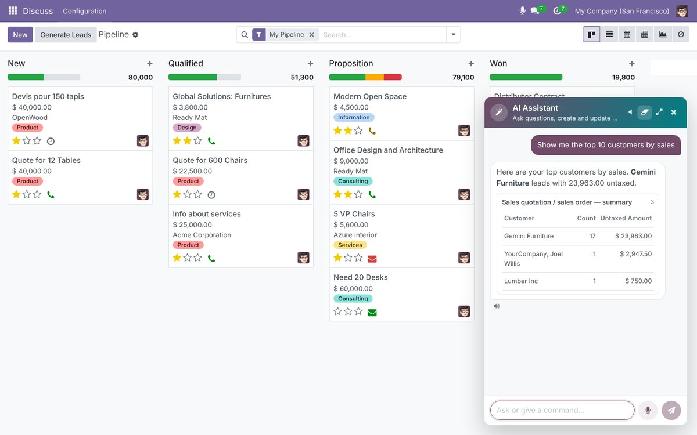
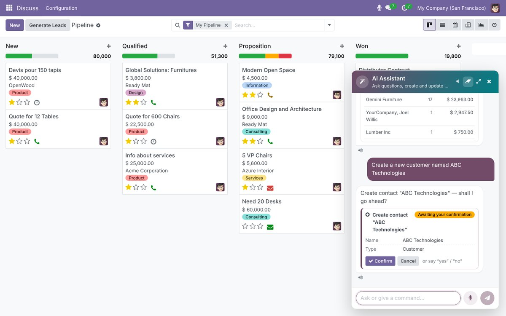
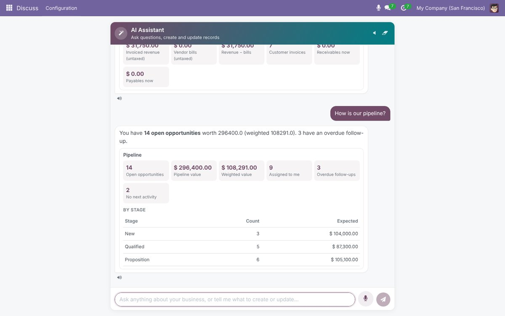
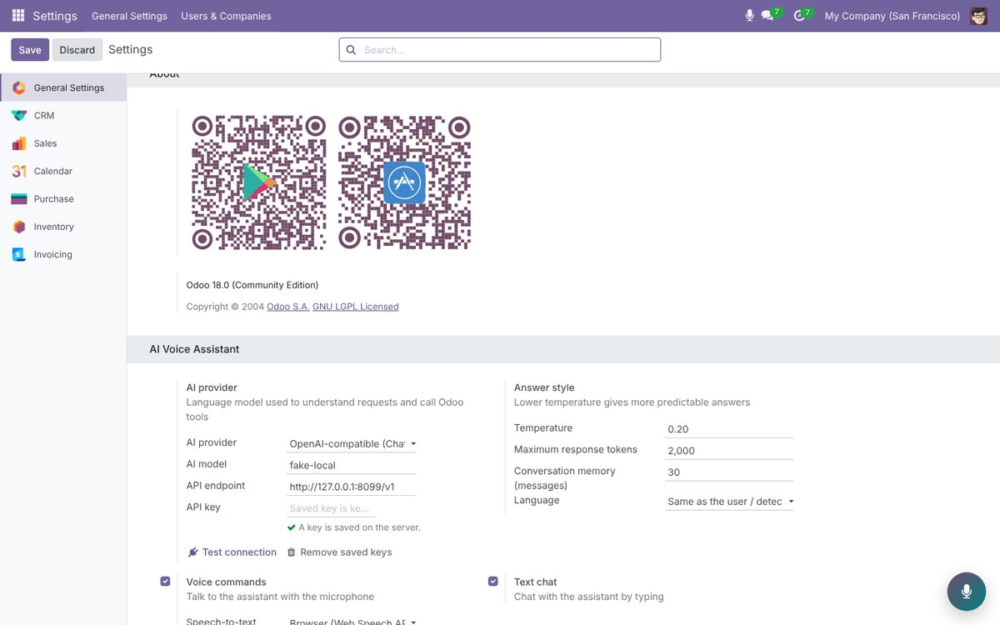

Talk to Odoo. Ask about your sales, pipeline, stock and accounts, and create or update records by voice or chat — with a confirmation step, your normal access rights and a complete audit log.

Microphone with live listening, transcribing and speaking indicators. Answers can be read aloud. Browser speech (free) or OpenAI speech services.
Tables and figures come straight from your database; rows open the Odoo record. Follow-up questions keep the context.
Contacts, leads, quotations, purchase orders, invoices, activities, stock adjustments — always previewed and confirmed before anything is saved.
Runs as the signed-in user: access rights, record rules and multi-company rules apply. No AI-generated code or SQL is ever executed.
Every proposal and operation is logged with user, model, record, request and status.
OpenAI or any OpenAI-compatible endpoint (OpenRouter, Groq, Azure, Ollama...). Keys stay on the server.


